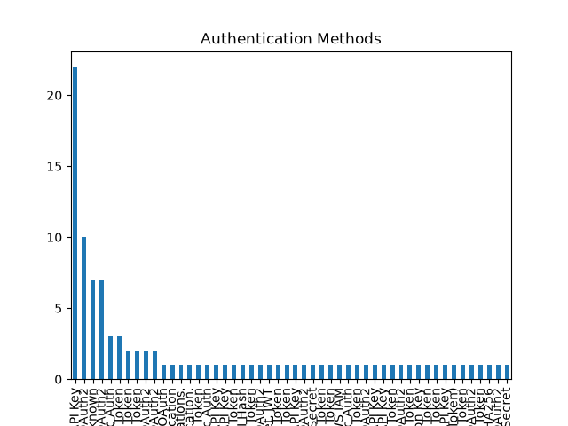
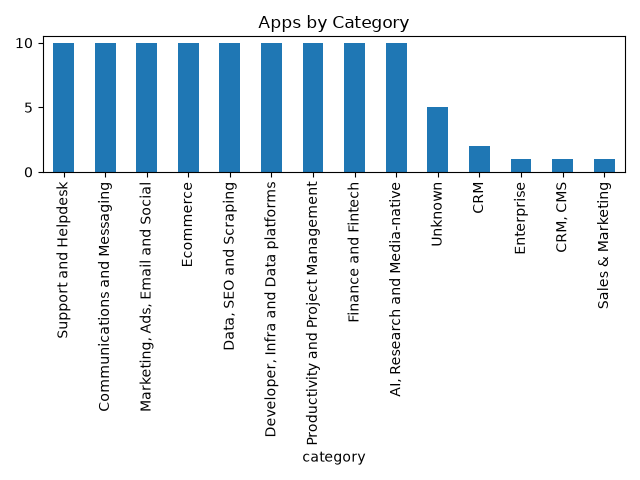
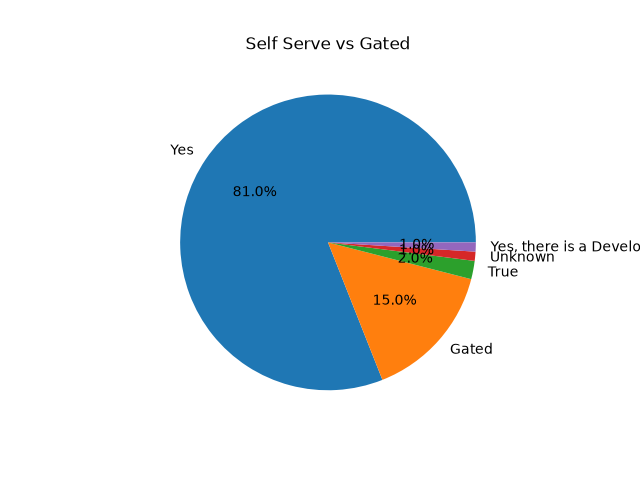

| category | description | authentication | self_serve | api_surface | mcp | buildable | blocker | evidence | app_name | website | error |
|---|---|---|---|---|---|---|---|---|---|---|---|
| Enterprise | Salesforce provides developer documentation and APIs to build mobile and enterprise applications in the cloud. These tools allow for integrating Salesforce data into apps, performing complex operations on a large scale, and connecting apps, systems, and data sources using options like Apex, platform events, APIs, and no-code tools. | Unknown | True | REST, Apex, Platform Events | Unknown | True | Unknown | category: "build mobile and enterprise applications in the cloud" (Result 1), "Integrate Salesforce data into apps and perform complex operations on a large scale." (Result 2), "APIs and Integration. Explore your options for integrating apps, systems, and data sources" (Result 3). description: "Learn how to build mobile and enterprise applications in the cloud using our developer documentation." (Result 1), "Integrate Salesforce data into apps and perform complex operations on a large scale." (Result 2), "Explore your options for integrating apps, systems, and data sources, including Apex, platform events, APIs, and no-code tools." (Result 3). self_serve: "Salesforce Developers: Developer Portal" (Result 2). api_surface: "Salesforce API Docs" (Result 1), "Introduction to REST API" (Result 1), "Salesforce REST API" (Result 2), "APIs and Integration. Explore your options for integrating apps, systems, and data sources, including Apex, platform events, APIs, and no-code tools." (Result 3). buildable: "Learn how to build mobile and enterprise applications in the cloud using our developer documentation." (Result 1), "Explore your options for integrating apps, systems, and data sources" (Result 3). | Salesforce | salesforce.com | NaN |
| CRM, CMS | HubSpot offers a developer platform with APIs, SDKs, and tooling to build custom CRM and data-driven website experiences. It includes APIs for various products and features like CRM and CMS. | Unknown | Yes | CRM APIs, CMS APIs, Object APIs, and APIs for other specific HubSpot products/features. | Unknown | Yes | Unknown | Welcome to the HubSpot Developer Documentation. Build custom CRM and data-driven website experiences on HubSpot. Follow the steps below to get started, ... (Snippet 1) 2026-03 API reference, Understanding the CRM APIs, Using Object APIs (Snippet 1 sitelinks) Craft experiences with HubSpot's Developer Platform—APIs, SDKs, tooling, and sample apps, plus a world-class builder community. Get started with a free ... (Snippet 2) HubSpot Developers | Create tomorrow's solutions today on ... (Snippet 2 title) This workspace includes a series of APIs and collections, each corresponding to a specific HubSpot product or feature, such as 'CRM,' 'CMS,' '...' (Snippet 3) | HubSpot | hubspot.com | NaN |
| CRM | A RESTful API for Pipedrive, enabling developers to build integrations and solutions within the Pipedrive Developer Platform. | Unknown | True | A RESTful API providing access to CRM functionalities, allowing developers to build integrations and solutions for Pipedrive. | Unknown | True | Unknown | ['This Pipedrive API reference and documentation helps you implement the RESTful Pipedrive API, enabling developers to build integrations with Pipedrive.', 'Their developer API, well-documented API reference page and easy use of webhooks allow developers to easily build solutions in the Pipedrive Developer Platform.', 'Kick-start your development with our developer resources. Browse our API Reference and Developer Documentation to learn more and use our Developer Community and ...', 'CRM API | REST API integration - Pipedrive'] | Pipedrive | pipedrive.com | NaN |
| Unknown | Attio provides a platform with a public REST API for integrating with other applications and building custom apps for Attio's customers or personal workspaces. | Unknown | Yes | REST API, exchanges JSON over HTTPS. | Unknown | Yes | Unknown | Our docs cover guides, examples, references and code to help you build apps and share them with Attio's customers or for your own workspace. (Position 1)\nAttio provides a public REST API which exchanges JSON over HTTPS. In this section, you will find guidance about working with the API. (Position 2)\nIntegrate Attio with anything. Start coding with a simple REST API that's secure and built for scale. View docs. (Position 3) | Attio | attio.com | NaN |
| CRM | The Twenty API allows developers to interact programmatically with the Twenty CRM platform, enabling integration with other applications. | API Key, OAuth | Yes | REST, GraphQL, Webhooks | Unknown | Yes | Unknown | category: Snippet 2 (Twenty CRM platform); description: Snippet 2 (The Twenty API allows developers to interact programmatically with the Twenty CRM platform. Using the API, you can integrate Twenty with other ...); authentication: Snippet 1 (OAuth), Snippet 3 (after creating an API key); self_serve: Snippet 3 (Your workspace-specific API documentation is available under Settings → API & Webhooks after creating an API key. It includes an interactive playground where ...); api_surface: Snippet 1 (REST and GraphQL APIs, webhooks); buildable: Snippet 1 (Build apps) | Twenty | twenty.com | NaN |
| Unknown | The Podio API is a complete programmable interface to all Podio functionality. It is split into different areas, including managing application definitions and handling files uploaded to Podio by end users. | Unknown | Unknown | The API offers a complete programmable interface to all Podio functionality, categorized into different areas. It covers managing application definitions and handling all files that can be uploaded to Podio. | Unknown | Wrappers are provided for PHP, .NET, Ruby, Java, Python, and Android, indicating that applications can be built using these languages and platforms. | Unknown | ['The Podio API is a complete programmable interface to all Podio functionality. We currently provide wrappers for PHP, .NET, Ruby, Java, Python, Android and ...', 'Our API is split up into different areas, This area is used to manage application definitions. contains all the files that can be uploaded to Podio by end ...'] | Podio | podio.com | NaN |
| Sales & Marketing | Zoho CRM's APIs, including the V8 version, enable users to create custom solutions and seamlessly integrate third-party applications with Zoho CRM. They provide core APIs to perform CRUD operations on CRM module entities through flexible RESTful endpoints. | OAuth 2.0 Authentication | Yes | Zoho CRM offers V8 APIs that include an API Collection, enabling operations like getting and inserting records, and interacting with Modules via flexible RESTful endpoints. The core APIs allow CRUD (Create, Read, Update, Delete) operations on CRM module entities. | Unknown | Yes | Unknown | Use Zoho CRM's V8 APIs to create custom solutions to your requirements and integrate third-party applications seamlessly with Zoho CRM. (Position 1)\nCore APIs. Perform CRUD operations on CRM module entities and integrate with any third party application through flexible RESTful endpoints. (Position 2)\nZoho CRM's V8 API includes sitelinks for API Collection, Get Records, Insert Records, and Modules API. (Position 1)\nOAuth 2.0 Authentication is available. (Position 1)\nAvailable through 'Developer Resources' and 'developer/docs/api/v8/'. (Position 1, 2)\nZoho REST APIs are tailored for products like Sales & Marketing. (Position 3) | Zoho CRM | zoho.com/crm | NaN |
| Unknown | The Close Developer Platform provides full endpoint documentation with schemas, examples, and an interactive API explorer. It uses industry-standard REST conventions with predictable URL structures, standard HTTP methods, and JSON request/response bodies. | Authentication methods include API keys for scripts and OAuth 2.0 for user-facing integrations. | Yes | The API surface is described as having full endpoint documentation with schemas, examples, and an interactive API explorer, following industry-standard REST conventions with predictable URL structures, standard HTTP methods, and JSON request/response bodies. | Unknown | Yes | Unknown | Close offers a 'Developer Platform' and 'Developer API Documentation'. It provides 'Full endpoint docs with schemas, examples, and an interactive API explorer.' Authentication is available via 'API keys for scripts or OAuth 2.0 for user-facing integrations.' The API 'uses industry-standard REST conventions with predictable URL structures, standard HTTP methods, and JSON request/response bodies.' | Close | close.com | NaN |
| Unknown | The Copper Developer API provides a RESTful interface with JSON-formatted responses to access most Copper resources. | OAuth is supported for authentication. | Yes, there is a Developer Portal with comprehensive guides on specific API integrations to guide the integration journey. | The API allows access to most Copper resources. | Unknown | Yes, there is a Developer API and a Developer Portal with guides for integration. | Unknown | Snippet 1: "The Copper Developer API ("Dev API") provides a RESTful interface with JSON-formatted responses to access most Copper resources."\nSnippet 2: "There are two main sections to guide your integration journey. The first section offers comprehensive guides on specific API integrations."\nSnippet 3: "The Copper Developer API provides a RESTful interface with JSON-formatted responses to access most Copper resources." and "https://developer.copper.com/introduction/oauth/flow.html" | Copper | copper.com | NaN |
| Unknown | The DealCloud API provides a comprehensive overview of REST APIs, their capabilities, and available endpoints. Specifically, the Data APIs allow users to work with the core data within their DealCloud site, enabling them to create, retrieve, update, and delete records. | API Keys, Authorization Token | Yes | REST APIs with capabilities and available endpoints for working with core data, including operations to create, retrieve, update, and delete records. It also covers pagination, rate limits, status codes, and handling. | Unknown | Yes | Unknown | ['DealCloud API Docs', 'Dealcloud Developer Documentation', 'Data APIs - DealCloud API Docs'] | DealCloud | api.docs.dealcloud.com | NaN |


